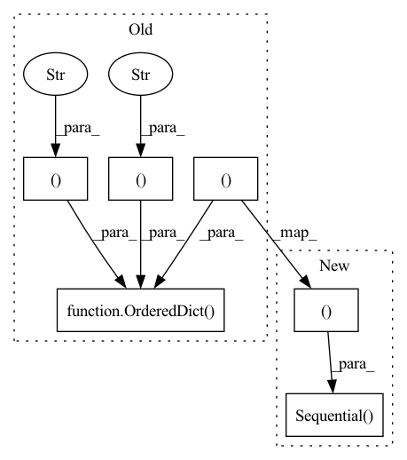

Pattern ID :1375

Before Change
norm="batch_norm", final_sigmoid=True):
super(Discriminator, self).__init__()
self.norm = norm
self.disc = nn.Sequential(OrderedDict([
// input: N x channels_img x 64 x 64
("conv_in", nn.Conv2d(
channels_img, features_d, kernel_size=4,
stride=2, padding=1, bias=False
)),
("leaky_relu", nn.LeakyReLU(0.2)),
// _block(in_channels, out_channels, kernel_size, stride, padding)
("block1", self._block(features_d, features_d * 2, 4, 2, 1)),
("block2", self._block(features_d * 2, features_d * 4, 4, 2, 1)),
("block3", self._block(features_d * 4, features_d * 8, 4, 2, 1)),
// After all _block img output is 4x4 (Conv2d below makes into 1x1)
("conv_out", nn.Conv2d(features_d * 8, 1, kernel_size=4,
stride=2, padding=0, bias=False)),
("sigmoid", nn.Sigmoid()) if final_sigmoid\
else ("identity", nn.Identity())
]))
def _block(self, in_channels, out_channels, kernel_size, stride, padding):
return nn.Sequential(OrderedDict([
After Change
channels_img, features_d, kernel_size=4,
stride=2, padding=1, bias=False
)),
("leaky_relu", nn.LeakyReLU(0.2)),
*block_list,
// After all _block img output is 4x4 (Conv2d below makes into 1x1)
("conv_out", nn.Conv2d(features_d * 8, 1, kernel_size=4,
stride=2, padding=0, bias=False)),
("sigmoid", nn.Sigmoid()) if final_sigmoid\
else ("identity", nn.Identity())
]
self.disc = nn.Sequential(OrderedDict(full_list))
def _block(self, in_channels, out_channels, kernel_size, stride, padding):
return nn.Sequential(OrderedDict([
("conv", nn.Conv2d(
In pattern: SUPERPATTERN
Frequency: 3
Non-data size: 6
Instances
Fragment ID: 3547447
Project Name: ebartrum/lightning_gan_zoo
Commit Name: dd5cb05b9edf8b06b7a7277aff29bb4ed0a4506e
Time: 2021-04-21
Author: edward.bartrum@gmail.com
File Name: core/models/standard_networks.py
M Class Name: Discriminator
N Class Name: Discriminator
M Method Name: __init__(6)
N Method Name: __init__(5)
M Parent Class: nn.Module
N Parent Class: nn.Module
M File Name: core/models/standard_networks.py
N File Name: core/models/standard_networks.py
M Start Line: 13
M End Line: 29
N Start Line: 11
N End Line: 32
'>
Before Change
squeezed_channels = make_divisible(int(channels * ratio), 8)
gating_fn = gating_fn if gating_fn else _SE_GATING_FN
self.se = nn.Sequential(OrderedDict([
("pooling", nn.AdaptiveAvgPool2d((1, 1))),
("reduce", Conv2d1x1(channels, squeezed_channels, bias=True)),
("relu", inner_activation_fn(inplace=True)),
("expand", Conv2d1x1(squeezed_channels, channels, bias=True)),
("sigmoid", gating_fn()),
]))
def forward(self, x):
return x * self.se(x)
After Change
layers = OrderedDict([])
layers["pooling"] = nn.AdaptiveAvgPool2d((1, 1))
layers["reduce"] = Conv2d1x1(channels, squeezed_channels, bias=True)
if _SE_USE_NORM:
layers["norm"] = nn.BatchNorm2d(squeezed_channels)
layers["relu"] = inner_activation_fn(inplace=True)
layers["expand"] = Conv2d1x1(squeezed_channels, channels, bias=True)
layers["sigmoid"] = gating_fn()
self.se = nn.Sequential(layers)
def forward(self, x):
return x * self.se(x)
'>
Fragment ID: 3547445
Project Name: ffiirree/cv-models
Commit Name: e622b26dcf62b8ec88e80183f5ba0cef941cb223
Time: 2021-09-13
Author: ice_qi@163.com
File Name: models/core/blocks.py
M Class Name: SEBlock
N Class Name: SEBlock
M Method Name: __init__(5)
N Method Name: __init__(5)
M Parent Class: nn.Module
N Parent Class: nn.Module
M File Name: models/core/blocks.py
N File Name: models/core/blocks.py
M Start Line: 447
M End Line: 456
N Start Line: 462
N End Line: 475
'>
Before Change
class Generator(nn.Module):
def __init__(self, channels_noise, channels_img, features_g):
super(Generator, self).__init__()
self.net = nn.Sequential(OrderedDict([
// Input: N x channels_noise x 1 x 1
("block1", self._block(channels_noise, features_g * 16, 4, 1, 0)), // img: 4x4
("block2", self._block(features_g * 16, features_g * 8, 4, 2, 1)), // img: 8x8
("block3", self._block(features_g * 8, features_g * 4, 4, 2, 1)), // img: 16x16
("block4", self._block(features_g * 4, features_g * 2, 4, 2, 1)), // img: 32x32
("transpose_conv_out", nn.ConvTranspose2d(
features_g * 2, channels_img, kernel_size=4,
stride=2, padding=1, bias=False)),
// Output: N x channels_img x 64 x 64
("tanh", nn.Tanh()),
]))
def _block(self, in_channels, out_channels, kernel_size, stride, padding):
return nn.Sequential(OrderedDict([
After Change
full_list = [
// Input: N x channels_noise x 1 x 1
*block_list,
("transpose_conv_out", nn.ConvTranspose2d(
features_g * 2, channels_img, kernel_size=4,
stride=2, padding=1, bias=False)),
// Output: N x channels_img x img_size x img_size
("tanh", nn.Tanh()),
]
self.net = nn.Sequential(OrderedDict(full_list))
def _block(self, in_channels, out_channels, kernel_size, stride, padding):
return nn.Sequential(OrderedDict([
("transpose_conv", nn.ConvTranspose2d(
'>
Fragment ID: 3547455
Project Name: ebartrum/lightning_gan_zoo
Commit Name: 33cb57daa95823255bd830c1a9686d2515df75af
Time: 2021-04-22
Author: edward.bartrum@gmail.com
File Name: core/models/standard_networks.py
M Class Name: Generator
N Class Name: Generator
M Method Name: __init__(5)
N Method Name: __init__(4)
M Parent Class: nn.Module
N Parent Class: nn.Module
M File Name: core/models/standard_networks.py
N File Name: core/models/standard_networks.py
M Start Line: 58
M End Line: 69
N Start Line: 56
N End Line: 75